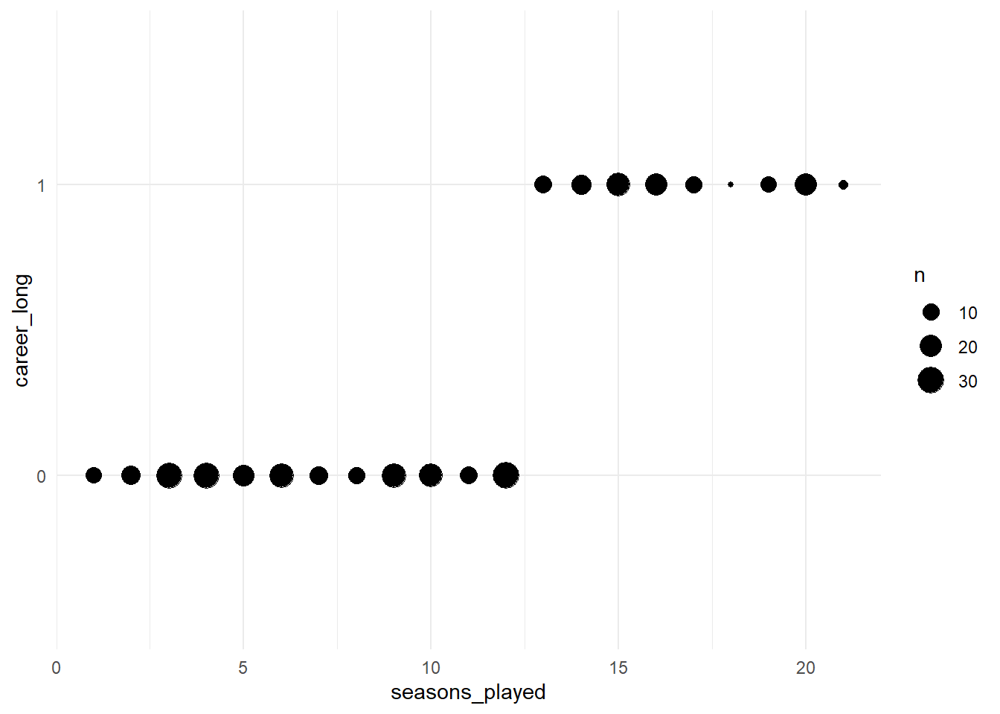

14 Logistic regression
14.3 Basic concepts
Logistic regression is similar to linear regression. The main difference is that it can perform better for binary variables (i.e. 0 vs. 1). Binary outcomes have only two levels. Linear regression is used to model continuous variables such as the number of points scored in an NBA game. A binary outcome would be the sex of the player (male vs. female) or the maybe the health status (injured vs. not injured).
Logistic regression and linear regression are both part of the family of generalized linear regression models (including also Poisson regression, ridge, lasso etc.). Logistic regression and linear regression share some of the same assumptions, such as linearity, outliers and multicollienarity.However, under the hood, logistic regression uses a different estimation method.
Rather than fitting a straight line through data points as in linear regression, logistic regression fits a “s-shaped” line through data points. Coefficients in the logistic model are interepreted as the probability of being category 1 or 0.
Linear regression uses ordinary least sqauares as estimation method (i.e. using the distance from each observation to the regression line). Logistic regression uses the “maximum likelihood function” to approximate the s-shape curve which best fits the data. It moves the s-curve left and right and calculates for each observation the likelihood of being either 0 or 1 given the assumed distribution. Then we take the average of all likelihoods of observations. The best fitting curve is the one with the largest likelihood (that’s why it is called “maximum likelihood function”).
See this youtube playlist on logistic regression for more details.
14.4 Application
Let’s apply logistic regression to our NBA data.
# load packages
library("tidyverse")
library("readxl")
library("lubridate")
# import data
nba_salaries <- read_csv("../datasets/nba/salaries_1985to2018.csv", show_col_types = FALSE)
nba_players <- read_csv("../datasets/nba/players.csv", show_col_types = FALSE)
# merge
data_nba <- merge(nba_players, nba_salaries, by.x = c("_id"), by.y=c("player_id"))
# clean
data_nba <- data_nba %>%
select(everything(), -league, -highSchool) %>%
filter(season_start>=1998) %>%
mutate(year_of_birth = year(mdy(birthDate)),
age = season_start - year_of_birth,
position_center =
case_when(position = str_detect(position,"Center") ~ 1,
TRUE ~ 0),
position_sf =
case_when(position = str_detect(position,"Small Forward") ~ 1,
TRUE ~ 0),
position_pf =
case_when(position = str_detect(position,"Power Forward") ~ 1,
TRUE ~ 0),
position_sg =
case_when(position = str_detect(position,"Shooting Guard") ~ 1,
TRUE ~ 0),
position_pg =
case_when(position = str_detect(position,"Point Guard") ~ 1,
TRUE ~ 0),
weight = str_replace(weight, "lb", ""),
weight = as.numeric(weight),
height = str_replace(height, "-", "."),
height = as.numeric(height),
) %>%
rename(id = "_id") %>%
select(id, name, age, weight, height, birthPlace, everything(), -position, -birthDate, -year_of_birth)
data_nba <- data_nba %>%
group_by(id) %>%
mutate(seasons_played = n()) %>%
ungroup()
str(data_nba)## tibble [9,728 × 35] (S3: tbl_df/tbl/data.frame)
## $ id : chr [1:9728] "abdulma02" "abdulta01" "abdulta01" "abdulta01" ...
## $ name : chr [1:9728] "Mahmoud Abdul-Rauf" "Tariq Abdul-Wahad" "Tariq Abdul-Wahad" "Tariq Abdul-Wahad" ...
## $ age : num [1:9728] 31 24 25 26 27 28 29 30 31 32 ...
## $ weight : num [1:9728] 162 223 223 223 223 223 223 223 223 223 ...
## $ height : num [1:9728] 6.1 6.6 6.6 6.6 6.6 6.6 6.6 6.6 6.6 6.6 ...
## $ birthPlace : chr [1:9728] "Gulfport, Mississippi" "Maisons Alfort, France" "Maisons Alfort, France" "Maisons Alfort, France" ...
## $ index.x : num [1:9728] 3 4 4 4 4 4 4 4 4 4 ...
## $ career_AST : num [1:9728] 3.5 1.1 1.1 1.1 1.1 1.1 1.1 1.1 1.1 1.1 ...
## $ career_FG% : chr [1:9728] "44.2" "41.7" "41.7" "41.7" ...
## $ career_FG3% : chr [1:9728] "35.4" "23.7" "23.7" "23.7" ...
## $ career_FT% : chr [1:9728] "90.5" "70.3" "70.3" "70.3" ...
## $ career_G : num [1:9728] 586 236 236 236 236 236 236 236 236 236 ...
## $ career_PER : chr [1:9728] "15.4" "11.4" "11.4" "11.4" ...
## $ career_PTS : num [1:9728] 14.6 7.8 7.8 7.8 7.8 7.8 7.8 7.8 7.8 7.8 ...
## $ career_TRB : chr [1:9728] "1.9" "3.3" "3.3" "3.3" ...
## $ career_WS : num [1:9728] 25.2 3.5 3.5 3.5 3.5 3.5 3.5 3.5 3.5 3.5 ...
## $ career_eFG% : chr [1:9728] "47.2" "42.2" "42.2" "42.2" ...
## $ college : chr [1:9728] "Louisiana State University" "University of Michigan, San Jose State University" "University of Michigan, San Jose State University" "University of Michigan, San Jose State University" ...
## $ draft_pick : chr [1:9728] "3rd overall" "11th overall" "11th overall" "11th overall" ...
## $ draft_round : chr [1:9728] "1st round" "1st round" "1st round" "1st round" ...
## $ draft_team : chr [1:9728] "Denver Nuggets" "Sacramento Kings" "Sacramento Kings" "Sacramento Kings" ...
## $ draft_year : chr [1:9728] "1990" "1997" "1997" "1997" ...
## $ shoots : chr [1:9728] "Right" "Right" "Right" "Right" ...
## $ index.y : num [1:9728] 17 19 20 21 22 23 24 25 26 27 ...
## $ salary : num [1:9728] 798500 1411000 1594920 4500000 5062500 ...
## $ season : chr [1:9728] "2000-01" "1998-99" "1999-00" "2000-01" ...
## $ season_end : num [1:9728] 2001 1999 2000 2001 2002 ...
## $ season_start : num [1:9728] 2000 1998 1999 2000 2001 ...
## $ team : chr [1:9728] "Vancouver Grizzlies" "Sacramento Kings" "Denver Nuggets" "Denver Nuggets" ...
## $ position_center: num [1:9728] 0 0 0 0 0 0 0 0 0 0 ...
## $ position_sf : num [1:9728] 0 0 0 0 0 0 0 0 0 0 ...
## $ position_pf : num [1:9728] 0 0 0 0 0 0 0 0 0 0 ...
## $ position_sg : num [1:9728] 0 1 1 1 1 1 1 1 1 1 ...
## $ position_pg : num [1:9728] 1 0 0 0 0 0 0 0 0 0 ...
## $ seasons_played : int [1:9728] 1 9 9 9 9 9 9 9 9 9 ...First, let’s check out dataset for binary outcomes. Binary variables in R are labelled as “factor” variables. Any categorical variable is a factor variable. A binary variable is simply a categorical variable with two categories.
## tibble [9,728 × 35] (S3: tbl_df/tbl/data.frame)
## $ id : chr [1:9728] "abdulma02" "abdulta01" "abdulta01" "abdulta01" ...
## $ name : chr [1:9728] "Mahmoud Abdul-Rauf" "Tariq Abdul-Wahad" "Tariq Abdul-Wahad" "Tariq Abdul-Wahad" ...
## $ age : num [1:9728] 31 24 25 26 27 28 29 30 31 32 ...
## $ weight : num [1:9728] 162 223 223 223 223 223 223 223 223 223 ...
## $ height : num [1:9728] 6.1 6.6 6.6 6.6 6.6 6.6 6.6 6.6 6.6 6.6 ...
## $ birthPlace : chr [1:9728] "Gulfport, Mississippi" "Maisons Alfort, France" "Maisons Alfort, France" "Maisons Alfort, France" ...
## $ index.x : num [1:9728] 3 4 4 4 4 4 4 4 4 4 ...
## $ career_AST : num [1:9728] 3.5 1.1 1.1 1.1 1.1 1.1 1.1 1.1 1.1 1.1 ...
## $ career_FG% : chr [1:9728] "44.2" "41.7" "41.7" "41.7" ...
## $ career_FG3% : chr [1:9728] "35.4" "23.7" "23.7" "23.7" ...
## $ career_FT% : chr [1:9728] "90.5" "70.3" "70.3" "70.3" ...
## $ career_G : num [1:9728] 586 236 236 236 236 236 236 236 236 236 ...
## $ career_PER : chr [1:9728] "15.4" "11.4" "11.4" "11.4" ...
## $ career_PTS : num [1:9728] 14.6 7.8 7.8 7.8 7.8 7.8 7.8 7.8 7.8 7.8 ...
## $ career_TRB : chr [1:9728] "1.9" "3.3" "3.3" "3.3" ...
## $ career_WS : num [1:9728] 25.2 3.5 3.5 3.5 3.5 3.5 3.5 3.5 3.5 3.5 ...
## $ career_eFG% : chr [1:9728] "47.2" "42.2" "42.2" "42.2" ...
## $ college : chr [1:9728] "Louisiana State University" "University of Michigan, San Jose State University" "University of Michigan, San Jose State University" "University of Michigan, San Jose State University" ...
## $ draft_pick : chr [1:9728] "3rd overall" "11th overall" "11th overall" "11th overall" ...
## $ draft_round : chr [1:9728] "1st round" "1st round" "1st round" "1st round" ...
## $ draft_team : chr [1:9728] "Denver Nuggets" "Sacramento Kings" "Sacramento Kings" "Sacramento Kings" ...
## $ draft_year : chr [1:9728] "1990" "1997" "1997" "1997" ...
## $ shoots : chr [1:9728] "Right" "Right" "Right" "Right" ...
## $ index.y : num [1:9728] 17 19 20 21 22 23 24 25 26 27 ...
## $ salary : num [1:9728] 798500 1411000 1594920 4500000 5062500 ...
## $ season : chr [1:9728] "2000-01" "1998-99" "1999-00" "2000-01" ...
## $ season_end : num [1:9728] 2001 1999 2000 2001 2002 ...
## $ season_start : num [1:9728] 2000 1998 1999 2000 2001 ...
## $ team : chr [1:9728] "Vancouver Grizzlies" "Sacramento Kings" "Denver Nuggets" "Denver Nuggets" ...
## $ position_center: num [1:9728] 0 0 0 0 0 0 0 0 0 0 ...
## $ position_sf : num [1:9728] 0 0 0 0 0 0 0 0 0 0 ...
## $ position_pf : num [1:9728] 0 0 0 0 0 0 0 0 0 0 ...
## $ position_sg : num [1:9728] 0 1 1 1 1 1 1 1 1 1 ...
## $ position_pg : num [1:9728] 1 0 0 0 0 0 0 0 0 0 ...
## $ seasons_played : int [1:9728] 1 9 9 9 9 9 9 9 9 9 ...We see that there are no “factor” variables currently in the dataset. However, there are a few variables that should be marked as factors which currently aren’t, such as birth place, college, draft team, and the shooting hand (left/right hand). If we want to use any of these variables in a regression, we need to convert them. Currently they are marked as “character” variables.
Let’s assume we are interested in knowing how long a player plays in the NBA measured by the number of seasons he played. It could be very useful for teams to predict how long players will last.
Let’s first look at that variable, dichotomize it (turning it into 0 vs. 1), and then explore it’s distribution.
## Min. 1st Qu. Median Mean 3rd Qu. Max.
## 1.000 5.000 9.000 8.758 12.000 21.000# dichotomize
data_nba <- data_nba %>%
mutate(career_long =
case_when(seasons_played>12 ~ 1,
seasons_played<=12 ~ 0,
TRUE ~ NA_real_),
career_long = as.factor(career_long))
table(data_nba$career_long)##
## 0 1
## 7499 2229data_nba %>%
filter(team =="Dallas Mavericks") %>%
ggplot(aes(x= seasons_played, y=career_long)) +
geom_count() +
# stat_smooth(method="glm",
# se=FALSE,
# method.args = list(family=binomial),
# formula= aes(career_long ~ seasons_playe)) +
theme_minimal()
The plot above shows the number of players for the Dallas Mavericks by career length and seasons played. The size of the buble represents the number of players in that category.
Now, let’s estimate a model explaining whether a player has a long career or not. Let’s include weight and height as independent variables
model_logit1 <- glm(career_long ~ height + weight,
data = data_nba,
family = binomial)
summary(model_logit1)##
## Call:
## glm(formula = career_long ~ height + weight, family = binomial,
## data = data_nba)
##
## Deviance Residuals:
## Min 1Q Median 3Q Max
## -0.9313 -0.7363 -0.6959 -0.6540 1.8572
##
## Coefficients:
## Estimate Std. Error z value Pr(>|z|)
## (Intercept) -1.3636355 0.4126623 -3.304 0.000952 ***
## height -0.1663504 0.0684373 -2.431 0.015070 *
## weight 0.0055569 0.0009376 5.927 3.09e-09 ***
## ---
## Signif. codes: 0 '***' 0.001 '**' 0.01 '*' 0.05 '.' 0.1 ' ' 1
##
## (Dispersion parameter for binomial family taken to be 1)
##
## Null deviance: 10472 on 9727 degrees of freedom
## Residual deviance: 10437 on 9725 degrees of freedom
## AIC: 10443
##
## Number of Fisher Scoring iterations: 414.5 Interpretation
The interpretation of coefficients in a logistic regression is different from the linear model. In a linear model, coefficients are interpreted as the increase on the y-scale for one unit increase in x. For logistic regression, coefficients relate to the increase or decrease of the probability (measured in log odds) that y= 1 for a one unit increase x.
In the output above, we see that the coefficient for height is -0.16. This means that for every inch (~ ca. 2.5 cm) in height, the probability of having a long career is 0.16 log odds lower. This suggests that taller people haver shorter NBA careers.
In practice no one interprets the effect size in log odds. In the standard logistic regression model, we only look at the p-value to see if the effect is statistally significant and we look at the sign in front of the coefficient to check whether the effect is positive or negative.
A more meaningful way to interpret effects are odds ratios. Log odds can be converted using the following appraoch.
## (Intercept) height weight
## 0.2557294 0.8467494 1.0055724Now, the effect of height is 0.84. This means that the probability of a long career is 0.85 times higher for taller people than for smaller people. If the odds ratio is 1, the probability would be the same. If it is 2, the probability would be twice as high. If it is lower than 1, it means that the probability is lower and that the effect is negative.
There is an alternative “tidyverse” way to get odds ratios using the broom() package.
It neatly converts the output into a table which makes it easier to graph later.
## # A tibble: 3 × 5
## term estimate std.error statistic p.value
## <chr> <dbl> <dbl> <dbl> <dbl>
## 1 (Intercept) 0.256 0.413 -3.30 0.000952
## 2 height 0.847 0.0684 -2.43 0.0151
## 3 weight 1.01 0.000938 5.93 0.00000000309More recently, it has become more common to convert the coefficients into probabilities. There are various packages and various options and no clear agreement on what is the preferred output.
Documentation for the ggeffects package[https://strengejacke.github.io/ggeffects/index.html] and the margins package [https://thomasleeper.com/margins/ ] capture this
discussion in detail. In the following, we will show you how to get Average MArginal Effects
and Average Predicted Probabilities.
The interpretation of Average Marginal Effects (AMEs) is more intuitive than log odds or odd ratios. AMEs are the average change in probability of y occuring for each unit increase in x.
# get average predicted probabilities for each level of "height"
predicted <- broom::augment(model_logit1, type.predict = "response") %>%
group_by(height) %>%
summarise(mean_fitted = mean(.fitted, rm.na=T))
# same as above, just using "ggpredict"
#install.packages("ggeffects")
library("ggeffects")## Warning: package 'ggeffects' was built under R version 4.2.3## Data were 'prettified'. Consider using `terms="height [all]"` to get
## smooth plots.## # Predicted probabilities of career_long
##
## height | Predicted | 95% CI
## ---------------------------------
## 5.00 | 0.28 | [0.24, 0.32]
## 5.40 | 0.26 | [0.23, 0.29]
## 5.60 | 0.26 | [0.23, 0.28]
## 6.00 | 0.24 | [0.23, 0.26]
## 6.40 | 0.23 | [0.22, 0.24]
## 6.80 | 0.22 | [0.21, 0.23]
## 7.20 | 0.21 | [0.19, 0.23]
## 7.80 | 0.19 | [0.17, 0.22]
##
## Adjusted for:
## * weight = 220.90##
## Not all rows are shown in the ouput. Use `print(..., n = Inf)` to show
## all rows.## Data were 'prettified'. Consider using `terms="height [all]"` to get
## smooth plots.## # Predicted probabilities of career_long
##
## height | Predicted | 95% CI
## ---------------------------------
## 5.00 | 0.28 | [0.24, 0.32]
## 5.40 | 0.26 | [0.23, 0.29]
## 5.60 | 0.26 | [0.23, 0.28]
## 6.00 | 0.24 | [0.23, 0.26]
## 6.40 | 0.23 | [0.22, 0.24]
## 6.80 | 0.22 | [0.21, 0.23]
## 7.20 | 0.21 | [0.19, 0.23]
## 7.80 | 0.19 | [0.17, 0.22]
##
## Adjusted for:
## * weight = 220.90##
## Not all rows are shown in the ouput. Use `print(..., n = Inf)` to show
## all rows.## Warning: package 'margins' was built under R version 4.2.3## Warning: package 'broom' was built under R version 4.2.3## Average marginal effects## glm(formula = career_long ~ height + weight, family = binomial, data = data_nba)## height weight
## -0.02928 0.0009779## factor AME SE z p lower upper
## height -0.0293 0.0120 -2.4326 0.0150 -0.0529 -0.0057The AME for height is -0.029. This means that for every additional inch in height, the NBA players are ~ 3 percentage points less likely to have a long career.
14.6 model fit
As we have seen with linear regression, there are differnt ways to assess whether a model is actually “good”. For linear regression, a popular mesaure is the R-squared which reports the “percenatge of variance in y which is explained by the model”. For logistic regression, there is no consensus on what the best measure is. There are dozens of different ways to calculate different r-squares. It’s complicated. See here[https://www.youtube.com/watch?v=xxFYro8QuXA&ab_channel=StatQuestwithJoshStarmer] for more in-depth technical discussion.
One way to get model performance measures is the performance package. One r2
that is often recommended is the McFadden pseudo r2. This measure should not
be interpreted as “percentage of variance” explained. It is useful as a relative
tool. Larger values are better than smaller values.
## # Indices of model performance
##
## AIC | AICc | BIC | Tjur's R2 | RMSE | Sigma | Log_loss | Score_log | PCP
## --------------------------------------------------------------------------------------------
## 10442.919 | 10442.921 | 10464.467 | 0.004 | 0.420 | 1.036 | 0.536 | -Inf | 0.648## # R2 for Generalized Linear Regression
## R2: 0.003
## adj. R2: 0.003Let’s add some variables to our model:
model_logit2 <- glm(career_long ~ height + weight + position_center + position_pg +
season_start,
data = data_nba,
family = binomial)Now, let’s compare models
## # R2 for Generalized Linear Regression
## R2: 0.003
## adj. R2: 0.003## # R2 for Generalized Linear Regression
## R2: 0.007
## adj. R2: 0.007As we can see, the second model has a larger pseudo r2 and this can be considered the better model.
Another way to compare models is the performance package:
## # Comparison of Model Performance Indices
##
## Name | Model | AIC (weights) | AICc (weights) | BIC (weights) | Tjur's R2 | RMSE | Sigma | Log_loss | Score_log | PCP | Score_spherical
## -------------------------------------------------------------------------------------------------------------------------------------------------------
## model_logit1 | glm | 10442.9 (<.001) | 10442.9 (<.001) | 10464.5 (<.001) | 0.004 | 0.420 | 1.036 | 0.536 | -Inf | 0.648 |
## model_logit2 | glm | 10405.8 (>.999) | 10405.8 (>.999) | 10448.9 (>.999) | 0.008 | 0.419 | 1.034 | 0.534 | -Inf | 0.649 | 1.322e-0414.7 diagnostics
Testing model assumptions and performing diagnostics is trickier for logistic regression compared to linear regression. Many diagnostics revolve around analysing residuals (difference between predictions and actial values). In the context of logistic regressio, given that the predicted values are probabilities and the actual values are either 0 and 1, it is not very clear what residuals mean.
We won’t cover diagnostic tests for logistic regression here, mainly to save time. A deeper dive into diagnostics can be found here[http://www.sthda.com/english/articles/36-classification-methods-essentials/148-logistic-regression-assumptions-and-diagnostics-in-r/]. A more recent package used in machine learning, called “performance” can also be used for diagnostics using the check_model function.
14.8 prediction
Predicting outcomes based on logistic regression was already covered above because predicted probabilities are an easier way of interpreting coefficients.
Here, let’s predict whether certain “fake” players will have a long career or a shorter career based on our model.
#define new observation
newdata = data.frame(height=c(5.0, 8.0),
weight=c(mean(data_nba$weight),
mean(data_nba$weight)))
#use model to predict value of am
predict(model_logit1, newdata, type="response")## 1 2
## 0.2753049 0.1874108The results above show that a very short player (5 feet) has a 27% probability of having a long career, whereas a very tall (8 feet) player only has a 18% probability of having a long career. Maybe taller people get injured more.
14.9 Mediation
Remember week X when we discussed mediation analysis based on linear regression?
Mediation is also possible for logistic regression, however, it is more complicated.
There are dedicated packages that help users apply mediation analysis following
glm(models) such as the khb package.
14.10 comparing linear and logistic regression
As we have seen above, logistic regression can cause many headaches because assessing the model fit, testing diagnostics, prediction and diagnostics are all very complicated to perform and interpret.
# logistic regression
model_glm <- glm(career_long ~ height + weight + position_center + position_pg +
season_start,
data = data_nba,
family = binomial)
margins(model_glm, type = "response")## Average marginal effects## glm(formula = career_long ~ height + weight + position_center + position_pg + season_start, family = binomial, data = data_nba)## height weight position_center position_pg season_start
## -0.00724 0.001603 0.008915 0.08375 0.001355# same model as linear regression
model_lm <- lm(as.numeric(career_long) ~ height + weight + position_center + position_pg +
season_start,
data = data_nba)
summary(model_lm)##
## Call:
## lm(formula = as.numeric(career_long) ~ height + weight + position_center +
## position_pg + season_start, data = data_nba)
##
## Residuals:
## Min 1Q Median 3Q Max
## -0.4419 -0.2441 -0.2119 -0.1536 0.8658
##
## Coefficients:
## Estimate Std. Error t value Pr(>|t|)
## (Intercept) -1.7880877 1.4735139 -1.213 0.2250
## height -0.0072116 0.0130242 -0.554 0.5798
## weight 0.0016320 0.0002599 6.278 3.57e-10 ***
## position_center 0.0085814 0.0126006 0.681 0.4959
## position_pg 0.0835295 0.0135119 6.182 6.59e-10 ***
## season_start 0.0013347 0.0007354 1.815 0.0696 .
## ---
## Signif. codes: 0 '***' 0.001 '**' 0.01 '*' 0.05 '.' 0.1 ' ' 1
##
## Residual standard error: 0.4187 on 9722 degrees of freedom
## Multiple R-squared: 0.00803, Adjusted R-squared: 0.007519
## F-statistic: 15.74 on 5 and 9722 DF, p-value: 1.821e-15As we can see, the Average Marginal Effects calculated based on the logistic regression model are almost identical compared to the linear regression coefficient. This is why in applied research, many scholars simply use OLS regression for binary outcomes. It is easier to apply, easier to interpret and the results are very similar in logistic regression.
As a rule of thumb, many researchers consider using logostoc regression when the probabilities are extreme, so many 99% or 1% cases. In these cases, linear regression could predict values higher than 100% or lower than 1%, which is, of course, not possible. However, if most predicted probabilities are between 20-80%, linear regression models have many advantages.
Example: If you’re modeling the probability of an NBA player to play more than 5 seasons, then nearly all the modeled probabilities will be between .20 and .80, and a linear probability model should fit nicely and offer a straightforward interpretation. Alternatively, consider you want to predict which player will score on average 30 points per game. This probability is likely between .000001 and .20. In that situation, the linear model just isn’t viable, and you have to use a logistic model or other alternatives.
For a more in-depth discussion see here [https://statisticalhorizons.com/linear-vs-logistic/].
14.11 logistic regression in Machine Learning context
Such like linear regression, logistic regression is one of the algorithms which are used in the context of Machine Learning to predict outcomes.
There are many alternatives to logistic regression when predicting binary outcomes such as …,…,…. These appraoches go far beyond the scope of this course. Predicting binary outcomes is often called “classification” in machine learning. Imagine you have 50 million pictures of animals and you want to predict whether an image contains a cat. Being a cat or not is a binary outcome, so logistic regresison could be used in this context.
In the following, we provide a very short introduction on how to use logistic regression in a machine learning appraoach using the caret package.
## Warning: package 'caret' was built under R version 4.2.3## Loading required package: lattice##
## Attaching package: 'caret'## The following object is masked from 'package:purrr':
##
## lift# Create a train and test split
set.seed(123) # For reproducibility
train_indices <- createDataPartition(data_nba$career_long, p = 0.7, list = FALSE)
train_data <- data_nba[train_indices, ]
test_data <- data_nba[-train_indices, ]
# Create a train control object
ctrl <- trainControl(method = "none")
# Train a linear regression model using caret
model1 <- train(
career_long ~ height + weight + position_center + position_pg +
season_start,
data = train_data,
method = "glm",
trControl = ctrl
)
# Make predictions on the test set
predicted_career_m1 <- predict(model1, newdata = test_data,
type = "prob") %>%
mutate(predicted_class_binary=`1`)The above yields our predicted probabilities for career_long for every observation in the test dataset. Previously, we have used RMSE to evaluate how good the predictions were. Again, this is different for models with binary outcome models since there are no “residuals” in the classic sense. Instead, a common metric for assessing model performance is “accuracy”. Accuracy measures which percentage of the actual values (whether someone had a long career or not) are corrected predicted by the model. Other metrics are kappa, sensitivity, specificity. The so-called “confusion matrix” compares the predicted “classes” with the actual “classes” in the training data and computes all these metrics:
test_data$pred_career <- predicted_career_m1$predicted_class_binary
test_data <- test_data %>%
mutate(predicted_class_binary =
case_when(pred_career>0.5 ~1,
pred_career<=0.5 ~0,
TRUE~ NA_real_),
predicted_class_binary = as.factor(predicted_class_binary))
str(test_data)## tibble [2,917 × 38] (S3: tbl_df/tbl/data.frame)
## $ id : chr [1:2917] "abdulta01" "abdulta01" "abdulta01" "abdulta01" ...
## $ name : chr [1:2917] "Tariq Abdul-Wahad" "Tariq Abdul-Wahad" "Tariq Abdul-Wahad" "Tariq Abdul-Wahad" ...
## $ age : num [1:2917] 25 26 29 30 32 23 24 26 27 31 ...
## $ weight : num [1:2917] 223 223 223 223 223 225 225 225 225 225 ...
## $ height : num [1:2917] 6.6 6.6 6.6 6.6 6.6 6.9 6.9 6.9 6.9 6.9 ...
## $ birthPlace : chr [1:2917] "Maisons Alfort, France" "Maisons Alfort, France" "Maisons Alfort, France" "Maisons Alfort, France" ...
## $ index.x : num [1:2917] 4 4 4 4 4 5 5 5 5 5 ...
## $ career_AST : num [1:2917] 1.1 1.1 1.1 1.1 1.1 2.5 2.5 2.5 2.5 2.5 ...
## $ career_FG% : chr [1:2917] "41.7" "41.7" "41.7" "41.7" ...
## $ career_FG3% : chr [1:2917] "23.7" "23.7" "23.7" "23.7" ...
## $ career_FT% : chr [1:2917] "70.3" "70.3" "70.3" "70.3" ...
## $ career_G : num [1:2917] 236 236 236 236 236 830 830 830 830 830 ...
## $ career_PER : chr [1:2917] "11.4" "11.4" "11.4" "11.4" ...
## $ career_PTS : num [1:2917] 7.8 7.8 7.8 7.8 7.8 18.1 18.1 18.1 18.1 18.1 ...
## $ career_TRB : chr [1:2917] "3.3" "3.3" "3.3" "3.3" ...
## $ career_WS : num [1:2917] 3.5 3.5 3.5 3.5 3.5 71.2 71.2 71.2 71.2 71.2 ...
## $ career_eFG% : chr [1:2917] "42.2" "42.2" "42.2" "42.2" ...
## $ college : chr [1:2917] "University of Michigan, San Jose State University" "University of Michigan, San Jose State University" "University of Michigan, San Jose State University" "University of Michigan, San Jose State University" ...
## $ draft_pick : chr [1:2917] "11th overall" "11th overall" "11th overall" "11th overall" ...
## $ draft_round : chr [1:2917] "1st round" "1st round" "1st round" "1st round" ...
## $ draft_team : chr [1:2917] "Sacramento Kings" "Sacramento Kings" "Sacramento Kings" "Sacramento Kings" ...
## $ draft_year : chr [1:2917] "1997" "1997" "1997" "1997" ...
## $ shoots : chr [1:2917] "Right" "Right" "Right" "Right" ...
## $ index.y : num [1:2917] 20 21 24 25 27 29 30 32 33 37 ...
## $ salary : num [1:2917] 1594920 4500000 6187500 6750000 1968750 ...
## $ season : chr [1:2917] "1999-00" "2000-01" "2003-04" "2004-05" ...
## $ season_end : num [1:2917] 2000 2001 2004 2005 2007 ...
## $ season_start : num [1:2917] 1999 2000 2003 2004 2006 ...
## $ team : chr [1:2917] "Denver Nuggets" "Denver Nuggets" "Dallas Mavericks" "Dallas Mavericks" ...
## $ position_center : num [1:2917] 0 0 0 0 0 1 1 1 1 1 ...
## $ position_sf : num [1:2917] 0 0 0 0 0 1 1 1 1 1 ...
## $ position_pf : num [1:2917] 0 0 0 0 0 1 1 1 1 1 ...
## $ position_sg : num [1:2917] 1 1 1 1 1 0 0 0 0 0 ...
## $ position_pg : num [1:2917] 0 0 0 0 0 0 0 0 0 0 ...
## $ seasons_played : int [1:2917] 9 9 9 9 9 10 10 10 10 10 ...
## $ career_long : Factor w/ 2 levels "0","1": 1 1 1 1 1 1 1 1 1 1 ...
## $ pred_career : num [1:2917] 0.202 0.203 0.205 0.206 0.208 ...
## $ predicted_class_binary: Factor w/ 1 level "0": 1 1 1 1 1 1 1 1 1 1 ...## Warning in confusionMatrix.default(data = test_data$predicted_class_binary, :
## Levels are not in the same order for reference and data. Refactoring data to
## match.## Confusion Matrix and Statistics
##
## Reference
## Prediction 0 1
## 0 2249 668
## 1 0 0
##
## Accuracy : 0.771
## 95% CI : (0.7553, 0.7861)
## No Information Rate : 0.771
## P-Value [Acc > NIR] : 0.5104
##
## Kappa : 0
##
## Mcnemar's Test P-Value : <2e-16
##
## Sensitivity : 1.000
## Specificity : 0.000
## Pos Pred Value : 0.771
## Neg Pred Value : NaN
## Prevalence : 0.771
## Detection Rate : 0.771
## Detection Prevalence : 1.000
## Balanced Accuracy : 0.500
##
## 'Positive' Class : 0
## The confusion matrix shows that the model predicted short careers (0) for 668 players who actually had long careers (1). It correctely predicted the career for 2249 players. Overall, the career that players had was predicted accurately in 77% of cases.